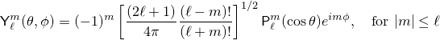

double sph_legendre(unsigned l, unsigned m, double theta);
float sph_legendref(unsigned l, unsigned m, float theta);
long double sph_legendrel(unsigned l, unsigned m, long double theta);
Effects: These functions compute the spherical associated Legendre functions of their respective arguments l, m, and theta (theta measured in radians).
Returns: Yℓm(θ, 0) where  and l is l, m is m, and theta is theta.
Remark: The effect of calling each of these functions is implementation-defined if l >= 128.
See also [sf.cmath.assoc_legendre].